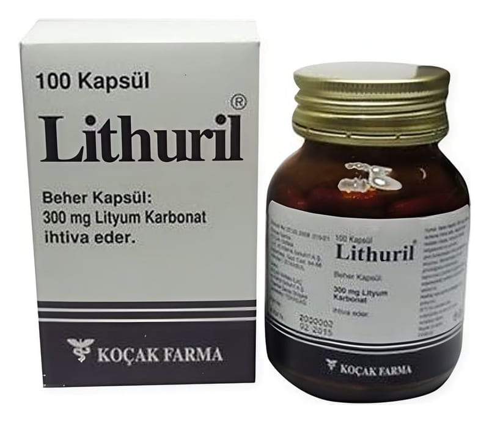

Lithuril 300 mg Kapsül, 100 Adet

Ne için kullanılır
KT · Bölüm 1LITHURİL, 100 kapsül içeren cam şişe ambalajında kullanıma sunulmuştur. LİTHURİL lityum karbonat adı verilen bir etkin madde içerir. LİTHURİL aşağıda belirtilen hastalıklarda kullanılır; - “Manik-depresif hastalık” ismi verilen hastalıktaki taşkınlık nöbetlerinin, ve tekrarlayan depresyonun önlenmesi ve tedavisi, - Nöbetler halinde gelen küme tipi baş ağrısının görülme sıklığını azaltmak, - Depresyon ve diğer davranışsal bozuklukların tedavisi, - Kandaki parçalı hücre sayısı az olan hastalarda enfeksiyon oluşma sıklığını azaltmak, 1/8